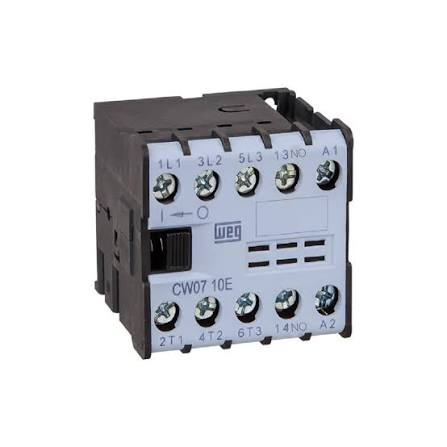
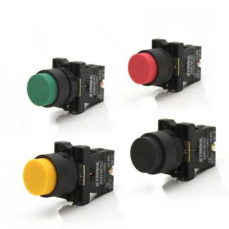
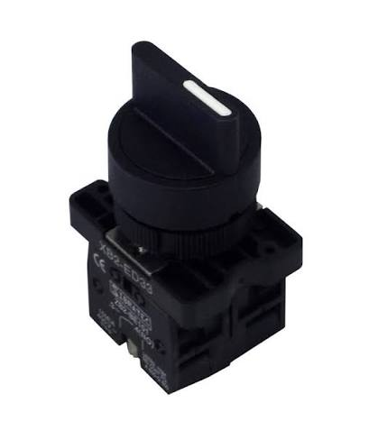
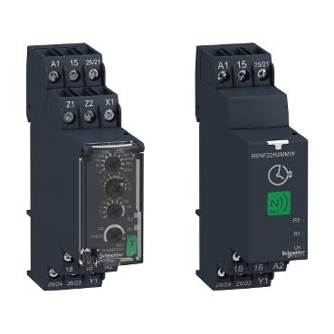

Dispositivos de Manobra, Comando e Controle
Esses componentes são responsáveis pelo chaveamento seguro de cargas elétricas, controle do fluxo de energia e inserção de variáveis de tempo e comandos manuais.
Contator
Conceito: É um dispositivo eletromecânico de manobra projetado para suportar altas correntes. Funciona por meio de um eletroímã interno (bobina).
Aplicação: Acionamento remoto e seguro de motores elétricos trifásicos, grandes bancos de resistências industriais e sistemas de iluminação pública.

Botão de Pulso (Botoeira Pulsadora)
Conceito: É um elemento de comando manual que altera o estado dos seus contatos elétricos apenas enquanto está sendo pressionado.
Aplicação: Utilizado em painéis de comando para dar pulsos de partida ("Ligar") ou de parada ("Desligar") em sistemas de motores.

Chave de Retenção
Conceito: Ao contrário do botão de pulso, a chave de retenção mantém a posição mecânica escolhida pelo operador após o acionamento.
Aplicação: Chaves seletoras de modo (como alternar um painel entre "Manual / Desligado / Automático") ou interruptores gerais.

Relé Temporizador
Conceito: É um dispositivo eletrônico cuja função é abrir ou fechar contatos elétricos após o transcurso de um intervalo de tempo previamente ajustado.
Aplicação: Controle de processos sequenciais automáticos, temporização de exaustores e na transição automática de chaves de partida de motores.
